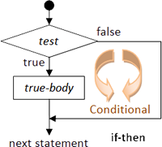
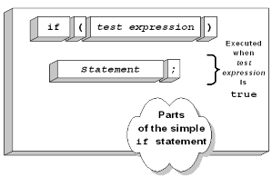
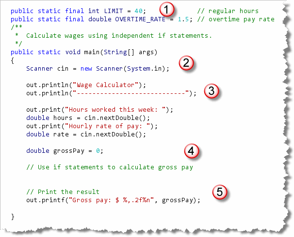
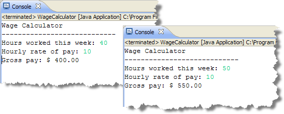
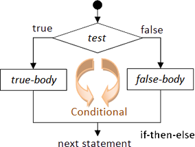
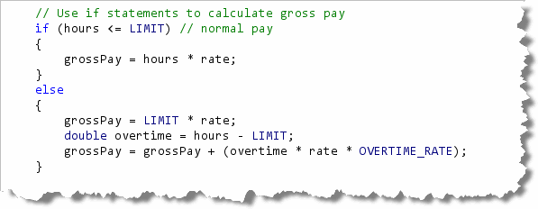
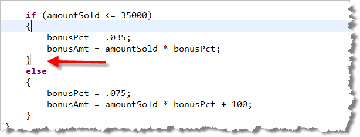
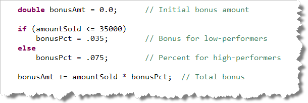
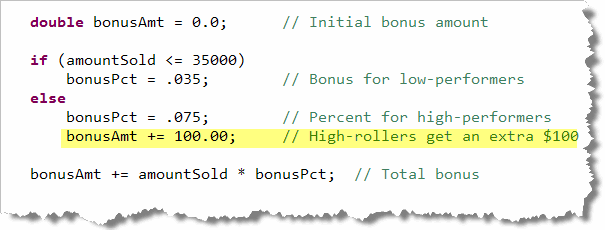
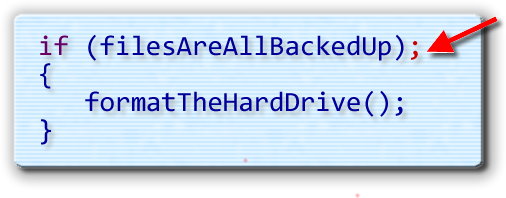

The relational operators,
and the
The relational operators,
and the boolean values that they produce, are
important because they allow us to implement selection.
Selection acts like a "highway divider" in your code; one minute
you're on a trip to Boy Scout Mountain, the next you're knee deep
in smoking men, and running around the desert with Gillian Anderson.
With selection, a relational operator is normally used to test two values. This test is called a condition. If the result of the test is true, then a particular section of code is executed; if the condition is false, then that section of code is skipped, and, perhaps, an alternative section of code is executed.
Here is an example of a selection statement using English like pseudocode:
If your salary is less than $ 25,000 then
Calculate tax based on 15% marginal rate
otherwise
Calculate tax based on 15% base rate
and a 28% marginal rate
Selection is also called branching, because any time you run the program you may take a different path through the code. Java has five different kinds of branching or selection statements that you will learn about in the next few chapters:
- The
ifstatement - The
if—elsestatement - Nested
ifandif—else—ifstatements - The
switchstatement - The conditional operator (
?:)
Let's get started by meeting your first selection
statement, the if statement. Once you
learn how to use if, your programs will be
able to make decisions.
The if Statement
The if statement is the
first, and simplest, branching instruction that we'll cover. Like
classes and methods, the if statement consists of
two parts: a header and a body.

With the if statement, the "header" is a
boolean condition to be tested. The body of the
if statement contains code to be executed.
Each if executes a single section of code
after testing its boolean condition. If the condition
is true, then the code is executed; if the condition
is false, the code is skipped.
Unlike a method body, the code contained in the body of
an if statement does not need to be enclosed in
braces. If you do not use braces, however, only a single
statement will be executed.
Syntax
This illustration shows the syntax of the if
statement.

Here are the important points to understand about theif statement syntax:- The
ifstatement begins with the keywordif. It must be in lowercase; you cannot use If or IF. - The condition following the
ifkeyword must—when evaluated—produce abooleanvalue. That means you can usebooleanliterals, (although you really shouldn't), predicate functions,booleanvariables, or, (most often), a relational expression. - Make sure you don't put a semicolon after the condition. When you do this, the body of the statement becomes what is known as a "null" statement. It is perfectly legal, but meaningless. If you put a semicolon after the condition, you are saying, "In the event that this condition is true, don't do anything."
- The parentheses are required, unlike in Pascal or Visual Basic.
- The body of an
ifstatement is a single statement, ending with a semicolon. The statement will be executed if the condition is true.
Let's look at a simple example, to see how the if statement works in practice.
Calculating Wages
Open the WageCalculator console program which you'll
find in this chapter's code folder, and type along.
After printing a heading, the program
asks the user to enter the number of
hours worked and the hourly wage:

Let's look at each of the pieces:- Rather than using magic numbers for the overtime limit and the overtime rate, I created two constants. Then, when the USA joins the civilized world with a 35 hour work week and double-pay for overtime, I'll only have to change these two constants and my program will continue working.
- As usual, I create the
Scannerobject I'll use for input at the beginning of themain()method. - The program begins by printing a heading and
then asking the user for the hours worked and the
hourly wage. These are stored in the
doublevariableshoursandrate. - Next, a variable is created for
grossPayand a comment indicates where we'll need to insert ourifstatements to calculate the correct amount. - Finally, the program prints the results using
printf().
Here's what the program looks like when run with
normal hours and when calculating wages with
some overtime:

Note that in the run on the left, the worker puts in 40 hours at $10 per, for $400 and no overtime. In the run on the right, the worker toils for 50 hours or 10 hours of overtime. She gets paid $400 in regular wages and another $150 in overtime.Normal Wages
To calculate the normal wages you need to insert an
if statement to calculate the user's
gross pay if no overtime is due. To do this, use
the boolean condition
hours <= LIMIT to make sure you include
the case when the user works exactly 40 hours.
Inside the body of the if statement,
multiply the rate of pay by the number of hours worked
and store the result in your gross pay variable.
Handling Overtime
To calculate the pay if the user works overtime,
you must add another if statement
following the original. This section calculates the
overtime pay.
For overtime, the worker earns the regular rate for
the original 40 hours. To that you add the overtime pay,
which is calculated by first finding the amount of
overtime hours (hours - LIMIT) and then
multiplying that by the overtime rate (rate *
OVERTIME_RATE). Add this amount to the
regular wages earned for working the first 40 hours.
Using if-else
One problem with WageCalculator.java
is that even when there is no overtime, (that is,
when hours is less-than-or-equal to 40),
your code still checks to see if hours is
greater than 40.

This really makes no sense at all because the two choices are obviously mutually exclusive:- If
hours <= LIMITistruethenhours > LIMITcannot betrue. - If
hours > LIMITistruethenhours <= LIMITcannot also betrue. - There are no possible values for
hourswhere one of these two conditions is nottrue. Every possible value fits into one or the other.
Since it is inefficient to test a condition that we
already know is false, Java provides a second portion
for the if statement, called the else
clause. You can see the syntax for the
if-else statement in the
illustration.

When you use the else keyword, the if
statement takes one action when a test is true, and a
different action when the test is false. This is much
more efficient because the original comparison is made only once.
If we modify WageCalculator.java like this:

the program works the same, is a little clearer and is less susceptible to inadvertent errors.Blocks, Indentation, Style, and Pitfalls
Often, you need to execute more that one statement whenever a
logical condition is true. In such cases, you enclose the
if-else statement body in braces,
(called a block), just
like you would for the body of a class or method.
When you write an if statement, you should
indent the statements inside the body of the if
and the else portions. Each line should be indented
at least two spaces and no more than five spaces.
I've configured DrJava to use 4 spaces for each tab and that's what the style guide checks.
Indenting Style
There are three common indentation styles you'll see in code, but for this class, I'd like you to use the "ANSI" style braces. (See Section 5.4—Style Rules for more information).
With "ANSI" style braces, the opening brace is placed immediately
below the keyword if. Each line inside the body is
indented one tab, and the closing brace is lined up with the
opening brace. The advantage of this style is that it makes
it easy to match your braces without looking back and forth
at the right and left margins.
Here's a code section indented correctly according to these rules:

Many books uses the traditional C "K&R" style (which the Sun source code also uses). With K&R style layout, the opening brace of each control structure appears on the same line as the Boolean condition. The advantage of this style is that your code is slightly more compact, so you can fit more on a single screen.Why Use Braces?
Braces are not required when the body of an if
statement consists of a single line of code. Nevertheless,
it is a good idea to put them in. Here's why.
Suppose that you wrote the original code, listed below, so
that a salesperson with sales above $35,000 received a
7½% bonus, and salespersons earning less than that
received a 3½% bonus. Your original code might look
like this:

After this original program was delivered, however, your company decides that the high-performing salesfolk should each get an additional bonus of $100 as well, so you add the following lines of code:
Despite your best intentions, and despite the fact that the program compiles, it does not do what you want it to do. Because the body of the else portion of the
if statement does not use braces, it consists of
the single statement assigning a bonusPct
of 7½ %. The following statement, adding the $100 performance
bonus, (which you intended to apply
only to high-performing salespeople), is, despite the indentation,
applied to everyone.
My personal rule of thumb to avoid this kind of
problem is to always use braces for an if
statement, unless the entire statement can fit on one line, like
this:
if (amt < 100) cost = .23;
Some languages actually make a syntactical distinction
between single and multi-line if statements,
but Java does not; it's up to you to enforce this style
rule if you feel it's valuable.
The Phantom Semicolon
Another common mistake when writing an if statement
is to insert a semicolon after the if
statement condition, like this:

Despite the admirable safety-check applied in this example, the hard-drive is still formatted, no matter whether the files are backed up or not. This null body says, in effect:- Check to see if
filesAreAllBackedUpis true. - If it is true then do nothing (the null statement)
- After checking to see if files are backed up,
call the
formatDrive()method.
Note that formatDrive() does not depend upon the
state of filesAreAllBackedUp.

Introducing Selection Summary
- Selection statements are flow of control statements that allow you to execute a portion of code based on a logical condition. These portions of code are known as branches.
- The simple
ifstatement tests a condition and executes another statement if the condition istrue. The statement executed is known as the body of theifstatement. - The condition tested is often a relational expression, but
may be a
booleanvariable or a predicate function. The body must be enclosed in braces (to create a block), if you wish to execute more than one simple statement. - If you wish to perform an alternative action when your
test condition is
false, then you should use theelseclause with theifstatement, instead of adding a secondifstatement. Think of this as an either-or condition. - In CS 170, you should line up the opening and closing braces
around the body of your
ifstatement. Indent the code inside the body of the statement by a single tab stop. This is known as ANSI-style brace placement. - While braces are not required if the body of the
ifstatement contains only a single line, adding them can help prevent errors that occur as your code is modified. If you have a single line of code and you don't want to use braces, then place the code on the same line as the condition. - Do not place a semicolon after the
ifcondition. This is not a syntax error, but a logic error. It causes the code you intended to be conditionally executed to always run, regardless of the condition.